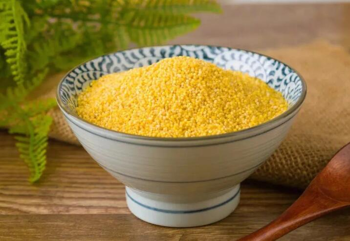

十大好谷物——小米
小米古称稷或粟，也称谷子，为黄色或浅黄色细小颗粒，是中国北方及西北居民传统的杂粮之一，小米虽然是我们生活中很常见的食物，但是营养保健作用却不小，小米已经被中国营养学会评选为中国十大好谷物之一，获得如此“殊荣”，那么吃小米究竟有哪些好处呢?

小米的营养成分
小米含有比大米更丰富的营养素，其脂肪是大米3.9倍，维生素E为大米7.9倍，膳食纤维是大米2.3倍，富含胡萝卜素和较多的维生素B2也是小米的营养特点。小米钾、钠比高达66：1，而大米的仅为27：1，小米铁含量为大米的2.2倍。(数据来源：中国营养学会)
明代李时珍《本草纲目》记载: “粟米气味咸，微寒无毒，主治养贤气，去脾胃中热。益气，陈者苦寒，治胃热消渴，利小便”。
小米为糖尿病患者的选择之一
小米的食用品质及加工性能直接受淀粉中直链淀粉和支链淀粉比例的影响。小米中的碳水化合物主要成分是淀粉，其中直链淀粉含量为27.2%，而玉米淀粉中的直链淀粉含量仅为20.3%。与玉米淀粉的糊化特性相比，小米淀粉持水力强、膨胀力高、凝胶稳定性好、糊化温度高。淀粉是人体能量的重要来源，小米的淀粉含量低于人们经常食用的稻米和小麦粉，也就是说小米相对于稻米和小麦粉，对血糖的影响会小一些，适合糖尿病患者食用。饮食均衡一直是糖尿病患者的饮食原则，无论选择什么食物，糖友一定要注意饮食均衡，摄入更多种类的营养素，会更有利于健康，因此糖友也要注意饮食多样化，不要因为小米适宜食用，而每天大量吃小米，拒绝其他食物。
那么糖尿病患者如何吃小米呢?按照食物交换份的原则，小米等同于大米，25克大米(半两)含有90千卡能量，同样25克小米也含有90千卡能量，如果您今天想吃一个食物交换份的小米，那么可以减少一个食物交换份的大米的摄入，也可以减少其他食物的摄入，同样也要是一个食物交换份的分量。
直链淀粉与支链淀粉
食物中直链淀粉含量越高，淀粉的消化率越低。淀粉由两种不同的物质组成，即直链淀粉和支链淀粉，不同的食物，两种淀粉的组成比例不同，直链淀粉比例高的食物血糖生成指数会相对要低。直链淀粉是葡萄糖分子的直线式结合，就像压得很紧的厚厚纸条，它们一张紧挨一张，牢牢结合以致水分子很难进去，糊化和消化也较难。支链淀粉是葡萄分子的分支串状结合，就像海菜，枝杈很多且有较多的空隙，更容易糊化和消化。小米淀粉中直链淀粉比例高于玉米淀粉，所以小米淀粉的升糖指数要低于玉米淀粉。
小米功效
健脾养胃
关于小米健脾养胃的功效，应该很多人不感到陌生。中医认为，小米性味甘、咸、凉，入脾、胃、肾三经，具有和中益肾、除热、解毒等功效，可以治疗反复呕吐、脾胃虚弱、泄泻等症。
调节失眠的作用
色氨酸在人体内代谢可生成5-羟色胺，其为一种抑制性神经递质，能够抑制中枢神经兴奋度，产生一定的困倦感;另外5-羟色胺也可转化生成褪黑素，褪黑素被证实有镇静和诱发睡眠的作用。小米中含有较为丰富的色氨酸，因此常吃小米有预防失眠的作用。
具有护眼作用
大家知道，维生素A又称为视黄醇，是眼睛所需的营养物质，人体如果缺乏维生素A，可引起夜盲症、干眼症以及角膜软化症，表现为在较暗光线下视物不清、眼睛干涩、易疲劳等。而小米富含胡萝卜素，100克小米含有维生素A为17毫克，胡萝卜素为100毫克，胡萝卜素在体内可以转化为维生素A，发挥护眼作用。
预防高血压
小米可以抑制血管收缩、降低血压。小米营养丰富，富含B族维生素如叶酸，膳食纤维，钙等多种营养成分，能起到抑制血管收缩、降低血压的作用。因此，糖友可以平时吃些小米，来预防高血压。
预防缺铁性贫血
要想预防缺铁性贫血，平时就要多吃含铁丰富的食物。动物肝脏含铁丰富，但是由于胆固醇较高，并不是糖友的理想选择，只能少量食用。其实小米也是含铁丰富的食物，100克小米含铁5.1毫克，而普通大米100克含有铁约2.3毫克，小米中铁含量是大米的2.2倍，虽然含铁量不及猪肝，但日常多食用还是能够发挥预防缺铁性贫血的作用的。
“米油”的营养价值
很多人在喝小米粥的时候会发现，小米粥上面漂浮的一层细腻黏稠物形如油糕，俗称“米油”，有古书记载，其营养价值可与参汤媲美，对产后妇女体质恢复有益。
中医认为，小米和大米味甘性平，都具有补中益气、健脾和胃的作用。二者用来熬粥后，很大一部分营养进入汤中，其中尤以粥油中最为丰富，是米汤的精华。清代《本草纲目拾遗》中记载，米油“黑瘦者食之，百日即肥白，以其滋阴之功，胜于熟地，每日能撇出一碗，淡服最佳”。清代《随息居饮食谱》中则认为“米油可代参汤”，因为它和人参一样具有大补元气的作用。
小米等全谷物可以融入到主食中
全谷物食物比精细谷物更有利于健康，全谷物可以融入到主食食用。全谷物如小米、玉米、燕麦、全麦粉等都可以直接作为主食，一日三餐中至少一餐可以用全谷物和杂豆类，如早餐吃小米粥、燕麦粥、八宝粥，绿豆粥等。午餐、晚餐中，可在小麦面粉中混合玉米粉、绿豆粉，或者选用全麦粉;白米中放一把糙米、燕麦、小米(适宜比例：全谷物1/3)来烹饪米饭;杂豆还可以做成各式主食，各种豆馅也是烹饪主食的好搭配，糖友们可以尝试一下。
我国传统，产妇坐月子要喝小米粥
在我国民间一直有产妇坐月子要喝小米粥的说法，小米粥是日常生活中很常见的一种谷物，营养也颇为丰富，产后女性的身体虚弱适当的吃些小米粥可起到补气健脾，和胃安眠，促进乳汁分泌的作用，对于身体虚弱的产妇而言小米粥是很适宜的食物。
传统的产妇喝的小米粥还要加红糖，可是糖尿病患者由于要控制血糖，需要控制糖的摄入，可以选择加入莲子、百合、红豆等食物，无论是在营养还是口味上都是不错的做法。
民间的粥疗歌谣
小米五谷首，营养最丰富。米粥常相伴，身体强又壮。
老人常喝粥，喜气益眉头。产妇多喝粥，防病又滋补。
小孩喝粥好，脾胃错不了。米粥煮红枣，胜似灵芝草。
若要不失眠，煮粥添莲子。气重体弱虚，山药最相宜。
桂圆米粥煮，气足心不虚。要治口臭病，荔枝粥除根。
头晕血压高，胡萝卜粥灵。要保肝功好，枸杞煮粥妙。
口渴心烦躁，粥加猕猴桃。肠胃缓泻症，胡桃米粥炖。
便秘补中气，藕粥最相宜。夏令防暑热，荷叶入粥煮。
若要双目明，粥中加旱芹。绿豆小米粥，清热又解毒。
萝卜煮米粥，运气又滋补。喝粥益处多，祝君身体好。